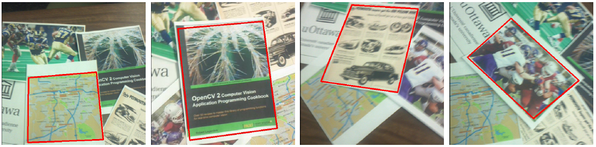
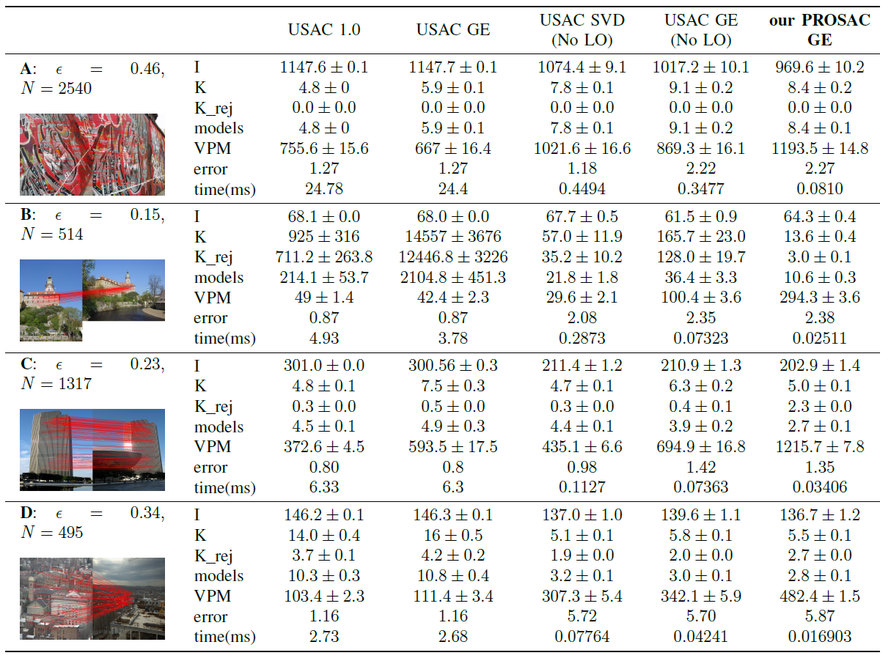

Fast Target Recognition on Mobile Devices
Objective
This work analyzes the problem of homography estimation for robust target matching in the context of real-time mobile vision. We present a device-friendly implementation of the Gaussian Elimination algorithm and show that our optimized approach can significantly improve the homography estimation step in a hypothesize-and-verify scheme. Experiments are performed on image sequences in which both speed and accuracy are evaluated and compared with conventional homography estimation schemes.
Results

Source Code
Available on GitHubReference
Fast Target Recognition on Mobile Devices: Revisiting Gaussian Elimination for the the Estimation of Planar Homographies
CVPR Mobile Vision
Workshop, Columbus, OH, June 2014.
Contact
Paticipants
- Olexa Bilianuk
Hamid Bazargani